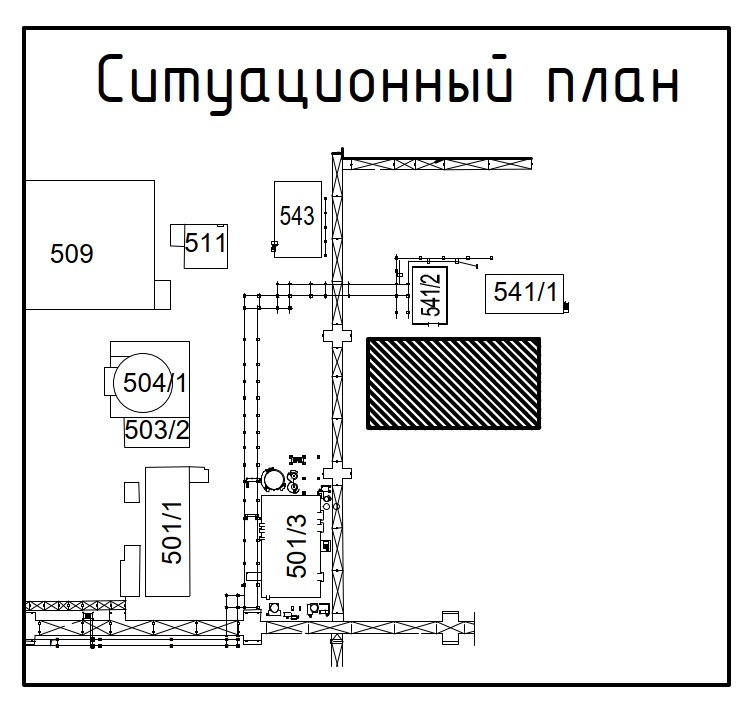
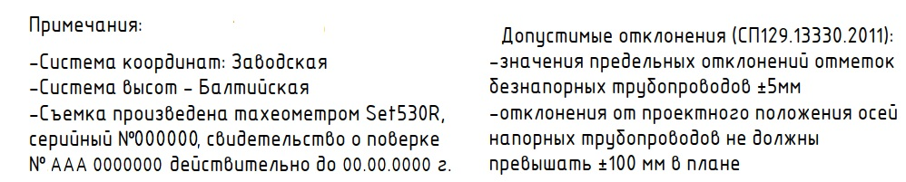

Геодезия в строительстве: практические навыки для начинающихЛокальный архив курса
Геодезия в строительстве · Осваиваем профессию инженера-геодезиста
Читаем исполнительные схемы
На этом уроке вы научитесь читать исполнительные схемы, которые составляют геодезисты. В конце урока выполните упражнение, после которого сможете анализировать исполнительные схемы даже с закрытыми глазами :)
Вера СафуановаЭксперт строительного контроля с опытом работы в строительной сфере более 15 лет
Схема анкерных болтов
Исполнительная схема анкерных болтов выполняется два раза: до заливки бетоном и после. Это делают по причине того, что в процессе заливки бетона анкерные болты могут сместиться.
Illustration
Статический текст источника:
Оси конструкции. Нумерацию осей берем из проекта. Если в проекте оси указаны дробные или латинские обозначения, значит на схему они также переносятся
Отклонения в плане в мм. Стрелками указаны направления отклонений верха анкерного бота в плане.
Отклонение по высоте в мм. Положительное значение со знаком «+» значит, что верх болта находится выше уровня проектного значения, а «-» - что верх болта занижен.
Расстояние болтов от оси.
Источник и ограничения. Проверка ответов, анимация, персонализация и экспорт могут требовать исходную платформу.
В примечаниях будет указана абсолютная проектная отметка верха анкерных болтов, так как она у них единая.
Бетонирование подколонников
Данный тип схемы отличается по своему оформлению, но при этом здесь указаны те же плановые и высотные отклонения.
Illustration
Статический текст источника:
Размеры монолитного фундамента ФОм2. Сверху размерной линии указан проектный размер, внизу размерной линии - фактический размер.
Таким символом обозначаются отверстия в теле бетона.
Привязка подколонника к оси. Сверху размерной линии указаны проектные привязки, снизу - фактические.
Обозначение осей.
Расстояние между осями.
Источник и ограничения. Проверка ответов, анимация, персонализация и экспорт могут требовать исходную платформу.
На исполнительной схеме в примечаниях обязательно отображаются единицы измерений, они даны в миллиметрах. При этом в отличие от схемы анкерных болтов проектная отметка в примечаниях не указывается. Так как на схеме отображаются несколько типов элементов, проектные отметки указываются на выносках.
TestCards
Статический текст источника:
Источник и ограничения. Проверка ответов, анимация, персонализация и экспорт могут требовать исходную платформу.
Бетонная подготовка
Данная исполнительная схемасчитается самой простой в чтении и оформлении.
Illustration
Статический текст источника:
Обозначение осей
Расстояние между осями
Проектная абсолютная и относительная отметка бетонной подготовки
Фактическое отклонение бетонной подготовки по высоте: «+» значит, что подготовка залита выше проектного уровня, а «-» - что подготовка занижена (подготовка недолита).
Привязка края бетонной подготовки к оси. Сверху указана проектная привязка, снизу - фактическая. Суммируя привязки вдоль/поперек оси, можно определить габариты конструкции.
Источник и ограничения. Проверка ответов, анимация, персонализация и экспорт могут требовать исходную платформу.
На исполнительной схеме в примечаниях обязательно указываются единицы измерений, они даны в миллиметрах.
Профиль инженерной сети
Одна из самых непростых для чтения и составления схем. Составляется в основном для водопроводов, канализаций.
Illustration
Статический текст источника:
Тип основания и подготовки под уложенную трубу с указанием толщины слоя.
Тип, марка, диаметр и маркировка уложенной трубы
Натуральная отметка земли. Также указывается план и факт земли в месте монтажа колодца.
Отметка люка. Указывается только после капитальной установки люка на колодец.
Отметка низа или лотка трубы. При этом указываются проектная и фактическая отметка. Могут быть указаны 4 отметки, обычно это делают при составлении профиля канализации, когда входящая трубы выше выходящей.
Величины масштабов при выполнении схемы.
Высотная шкала. На ней указаны абсолютные отметки с запасом вверх и низ.
Колодец, где верхняя и нижняя граница отрисованы четко по указанным высотам на уровне своих высот на шкале.
Труба, указывается с учетом диаметра трубы, высота также должна соответствовать высоте на боковой шкале.
Нумерация колодцев в соответствии с проектом.
Расстояние между колодцами, указывается от центра до центра элемента. Над линией указаны проектные расстояния, снизу фактические.
Длина и уклон трубы. Над линией указаны проектные расстояния, снизу фактические.
Источник и ограничения. Проверка ответов, анимация, персонализация и экспорт могут требовать исходную платформу.
Обратите внимание, что уклон указан в промилле ‰. Уклон рассчитывается как разница отметок соседних колодцев деленная на расстояние между колодцами * 1000.
На исполнительной схеме по требованию Заказчика также может присутствовать ситуационный план, где будет указано место съемки участка или конструкции.

Кроме того, в соответствии с требованием ГОСТ 51872-2024 на листе указываются данные о системе координат, системе высот и оборудовании, которым была выполнена съемка. По требованию Заказчика может быть указана нормативная документация, в соответствии с которой производились работы и допустимые отклонения.

Давайте закрепим пройденный материал урока и выполним задание на расчет уклона трубопровода в промилле.
TestCards
Статический текст источника:
Источник и ограничения. Проверка ответов, анимация, персонализация и экспорт могут требовать исходную платформу.
Отлично! Мы разобрали самые популярные схемы в строительстве. Помните, что обозначение отклонений могут быть разные, главное условие, чтобы они были читаемые и указывали проектные и фактические отметки, высоты и длины.